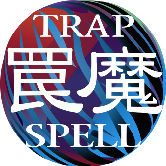

Zyyz the Forbidden

trap card
mp17-en125
Trap Cards are cards with purple-colored borders that have various effects. A Trap Card must first be Set and can only be activated after the current turn has finished. After that, it may be activated during either player's turn.